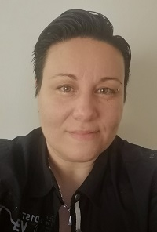

Bienvenue dans mon Portfolio !
Développeur Angular full stack
 Mon nom est Mélissa Nappez, j'ai 35 ans et je suis française. Au cours des annèes j'ai cumulé les petits boulots, allant du travail à la chaîne en usine à mon poste en informatique aujourd'hui. Je ne savais pas quoi faire de ma vie à ce moment-là, jusqu'au jour où j'ai pu me reconvertir professionnellement suite à un accident de travail qui m'empêcha de continuer au poste que j'occupais.
Cette reconvertion en tant que Technicienne d'assistance informatique, a été un tournant dans ma vie. Non seulement du côté professionnel mais aussi du côté relationnel. Ma reconvertion en infomatique a été pour moi la chance de ma vie de faire enfin un métier que j'aime. Le soutien de mes formateurs pendant mes 2 annèes de formation à L'institut Informatique Sud Aveyron était la chose la plus importante car elle m'a aidé à avoir confiance en moi et en mes capacités.
À l'obtention de mon diplôme j'ai travaillé pour la société Amadeus, en tant que prestataire, où j'ai pu m'occuper de la maintenance hardware d'un data center regroupant 600 serveurs.
Par la suite, j'ai intégré l'équipe du centre d'appel d'Acetiam, qui est essentiellement dans le domaine médical. Mes tâches étaient les prises d'appels, aider et résoudre les problèmes liés aux dossiers des patients. Certains demandant une réactivité rapide car la vie d'un patient en dépendait (transmission d'examens non reçus, dossier patient inaccessible pour le neurologue, serveus surcharchés, etc).
Mes projets personnels étaient de venir vivre au Québec, c'était mon rêve depuis plusieurs annèes, et en 2018 j'ai pris la décision de participer au programme de l'IRCC pour bénéficier d'un PVT (Permis Vacances-Travail) qui me permettrait d'immigrer au Canada. Et c'est en 2019 que mon rêve s'est réalisé, j'avais obtenue l'invitation a présenter mon dossier d'immigration, puis en mars réception de ma lettre m'informant que je pouvais me présenter au frontières Canadienne pour récupérer mon permis de travail.
Dans l'attente de cette invitation, j'avais déjà commencé à démarcher les entreprises québécoises afin de trouver mon futur employeur. Mon premier contrat a été passé avec Micro Logic avant mon départ de la France. Deux mois plus tard, le 3 mai 2019, je prenais l'avion pour le Québec, et ma nouvelle vie. J'ai commencé mon premier emploi au Québec en mandat à la Centrale des syndicats du Québec jusqu'au 30 novembre 2019.
Depuis de 2 décembre 2019, j'ai rejoins la société québécoise CPU en tant que Technicienne informatique niveau 2 en interne, puis le 3 mars 2020 en mandat au Ministère de l'Environnement et de la Lutte contre les changements climatiques. Tout d'abord au Centre de Service Technologique, puis à la Gestion de Parc.